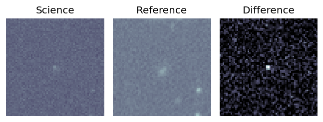
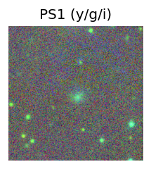
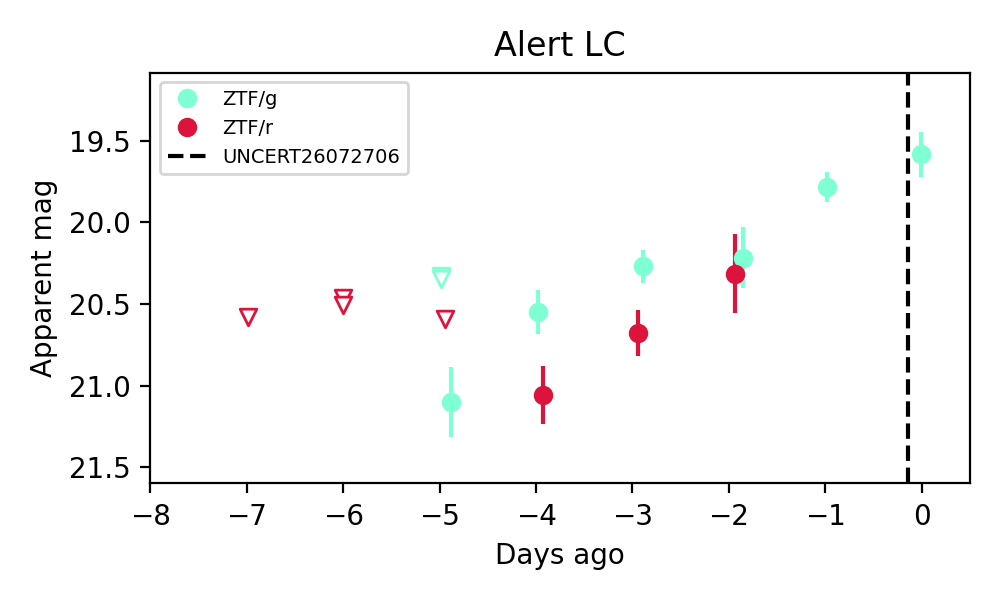
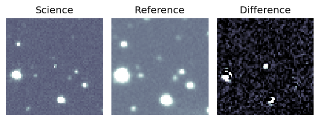
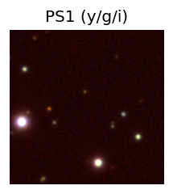
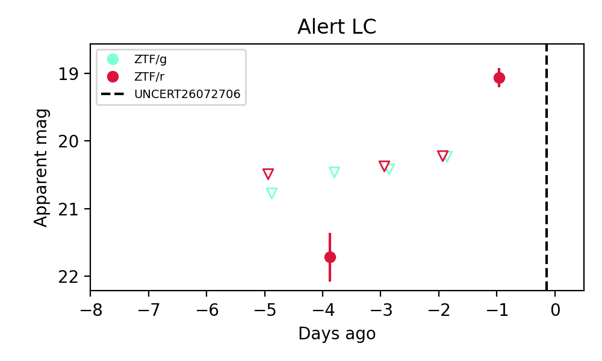
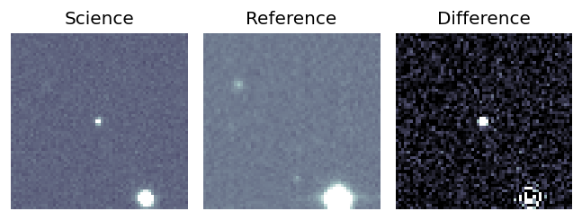
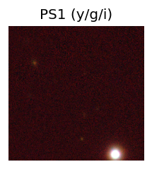
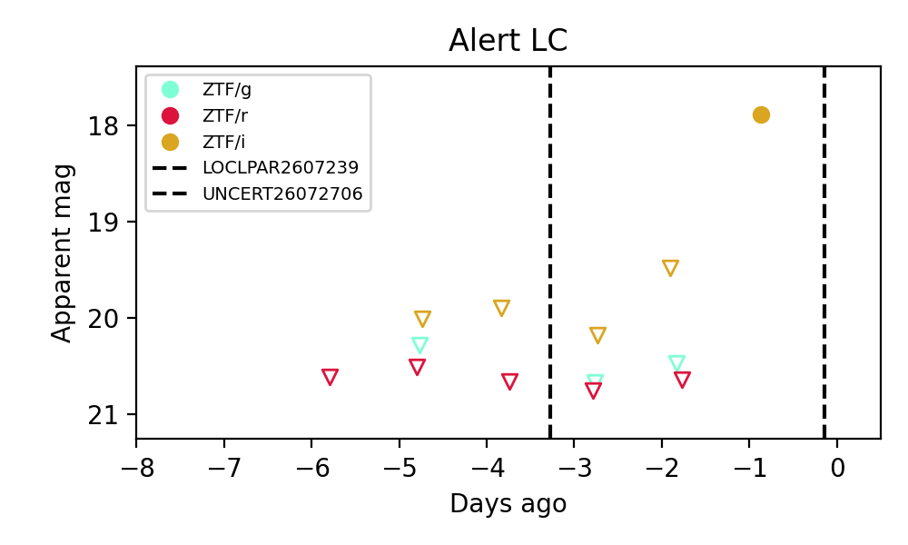

Candidate List 20260727Last night — ZTF: 673 passed basic cuts (32 young) · LSST: 0 passed basic cuts (0 young)Previous Day Next Day
Section 1: New Sources (age<1d) Section 2: Old (1-5d) sources observed last nightplaceholder
Section 1: New Afterglow/FBOT Cands Last Night (0)
Section 2: Older Sources Observed Last Night (3)
0. [ZTF] ZTF26abjvhoa (FBOT?) [Back to Top] [Share] [Trigger Swift] [Fritz Alert] [Fritz Source] [Lasair]RA, Dec: 270.16355, 51.71495 18h 0m39.25s, 51d42m53.83sGalactic (l, b): 79.4123, 28.6271 ext(g-r) = 0.046

TESS: Sectors [ 14 18 21 24 25 40 41 48 51 52 53 54 58 74 75 78 79 80
81 85 117 118 119 120]
SDSS (<15 kpc):Found SDSS phot-z: z=0.14; peak abs mag = -19.74
PS1: 0 sources in 3 arcsec
LegacySurvey: 1 sources in 3 arcsec Closest: d = 2.46 arcsec, 193.9 deg (east of north) photoz=0.09 (68% bounds 0.05, 0.12), type=EXP peak abs mag = -18.49 (68% bounds -17.01, -19.19)

Extinction-corrected gr color:
From alerts: -0.14 +/- 0.31 mag
Consistent with synchrotron, g-r>0!
Rise Rate:
g: 0.27 mag/day
r: 0.38 mag/day
Fade Rate:
1. [ZTF] ZTF26abkbpuk (FBOT?) [Back to Top] [Share] [Trigger Swift] [Fritz Alert] [Fritz Source] [Lasair]RA, Dec: 280.26125, 36.87911 18h41m2.70s, 36d52m44.81sGalactic (l, b): 65.86346, 17.81359 ext(g-r) = 0.06

TESS: Sectors [ 14 26 53 54 74 80 81 118 119]
PS1: 0 sources in 3 arcsec
LegacySurvey: 1 sources in 3 arcsec Closest: d = 5.50 arcsec, 9.5 deg (east of north) photoz=0.14 (68% bounds 0.05, 0.53), type=PSF peak abs mag = -20.15 (68% bounds -17.55, -23.44)

Extinction-corrected gr color:
From alerts: -1.31 +/- 99 mag
Rise Rate:
r: 1.18 mag/day
Fade Rate:
2. [ZTF] ZTF26abkchdr (FBOT?) [Back to Top] [Share] [Trigger Swift] [Fritz Alert] [Fritz Source] [Lasair]RA, Dec: 351.79411, 3.1101 23h27m10.59s, 3d 6m36.37sGalactic (l, b): 85.75132, -53.56667 ext(g-r) = 0.048

TESS: Sectors [42 70 92]
PS1: 0 sources in 3 arcsec
LegacySurvey: 1 sources in 3 arcsec Closest: d = 1.15 arcsec, 70.7 deg (east of north) photoz=0.86 (68% bounds 0.72, 1.04), type=PSF peak abs mag = -25.87 (68% bounds -25.41, -26.39)

Extinction-corrected gr color:
From alerts: -1.04 +/- 99 mag
Extinction-corrected ri color:
From alerts: 1.75 +/- 99 mag
Rise Rate:
i: 1.53 mag/day
Fade Rate: